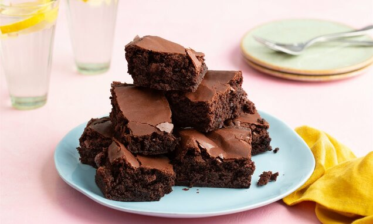

Brownies

ingrediënten
- 200 gram ijskoude boter
- 100 gram bloem
- 200 gram fondantchocolade
- 4 eieren
- 200 gram suiker
Bereidingen
- Verwarm de oven voor op 180°C. Beboter de bakvorm en bestuif met bloem.
- Smelt de chocolade au bain-marie. Haal de kom uit het warme water en roer de boter in blokjes door de
gesmolten chocolade. Laat een beetje afkoelen.
- Splits de eieren. Klop de eiwitten stijf. Klop de dooiers met de suiker tot een witschuimige massa, roer ze
voorzichtig door het afgekoelde chocolademengsel. Spatel er vervolgens het eiwitschuim door. Zeef de bloem
boven het beslag en spatel ze er voorzichtig door.
- Schep het beslag in de vorm en strijk glad. Bak 20 à 25 minuten in de oven, tot de bovenkant droog en
lichtjes gebarsten is, maar het midden nog wat kleverig aanvoelt. Laat afkoelen in de vorm.
- Snij het gebak in 12 vierkanten en serveer.